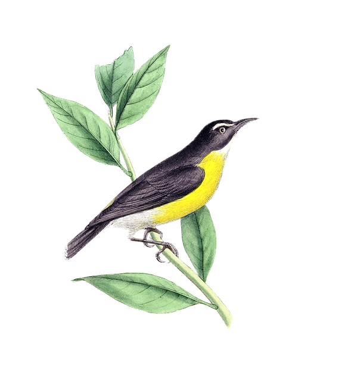

Cautionary Ghost, un dessin humoristique de xkcd
L'auteur place tous les dessins de son site sous la licence Creative Commons CC BY-NC 2.5
(BY - attribution nécessaire, NC - usage non-commercial exclusivement)

Illustration sans titre provenant d'une banque d'image
Autrice : Karen Arnold de Pixabay
Certains créateurs permettent l'usage libre des œuvres (usage commercial, aucune mention de l'auteur).
Toujours vérifier attentivement les mentions accompagnant l'œuvre.
Mentionner l'auteur est toutefois considéré comme une « bonne pratique ».

Traffic 2008 Philharmonie Berlin
Photographie de KulturPate sous licence CC BY-SA 3.0"
Shibuya Crossing, Tokyo, Japan
Vidéo de Basile Morin sous licence CC BY-SA 4.0